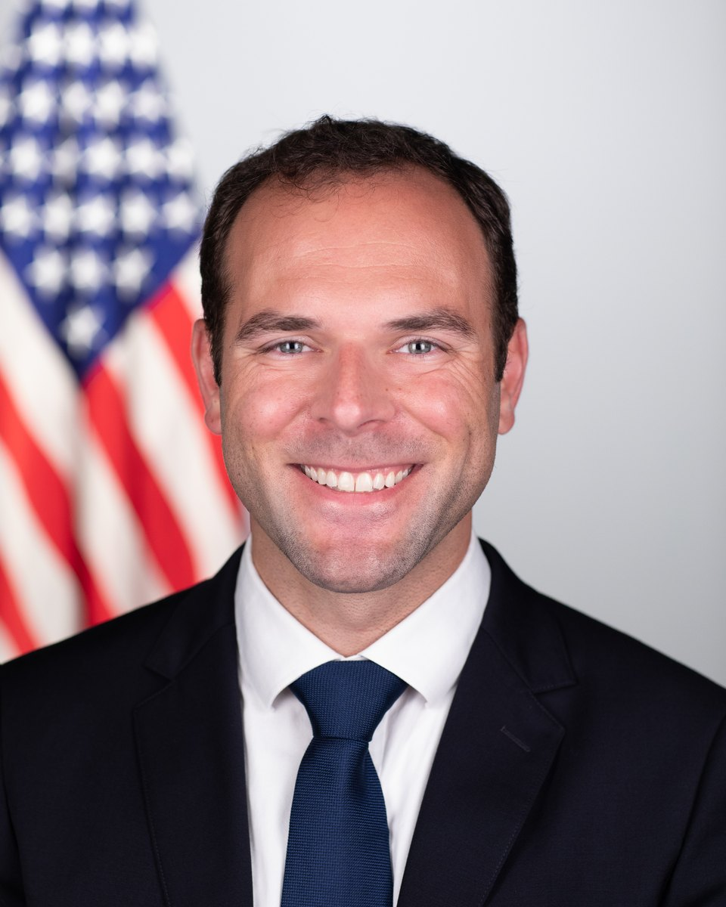

Harrow Defense builds body-worn electronic systems for people who work beyond reliable infrastructure. We founded the company in early 2026 around one product, PYLON, and one conviction: the sensors already on a soldier should reach the network, and every soldier should have a position on it. We took PYLON from concept to assembled prototype hardware without outside capital or a government award, and the intellectual property is founder-developed and company-owned.

Dan founded Harrow Defense in 2026 and has taken PYLON from concept to assembled prototype hardware on founder capital, owning the product architecture, directing a U.S. engineering partner on board design, and carrying the customer engagement himself.
Before Harrow, he served as Chief Operating Officer of a defense electronics company shipping soldier-borne systems at scale, where he led the technical and operations teams. Earlier, he built and scaled emerging technology products at Apple as a hardware program leader, and led AI and machine learning deployments for U.S. defense and intelligence customers at DataRobot.
He is a former U.S. Army Special Forces officer, a former White House Fellow, and a Term Member of the Council on Foreign Relations. He holds an active TS/SCI clearance.
Harrow keeps non-recurring engineering low by owning its intellectual property and pairing founder-led product architecture with specialist U.S. partners: printed circuit board design and assembly by a U.S. electrical-engineering firm, enclosure design and additive manufacturing domestically, and compliance handled in-house. The result is a company that reached assembled prototype hardware for a fraction of what a conventional defense hardware startup spends to get there.
Firmware, board bring-up, and MIL-STD-810H test. Owns the path from Rev A to qualified hardware.
Zephyr RTOS, LoRa and Bluetooth stacks, and edge inference on the node.
Government sales pipeline across Army, Marine Corps, and special operations offices, plus the first-responder channel.
Electrical engineering, FCC compliance, and transition support continue through contracted partners.
Virginia company based in Alexandria, founded to build body-worn systems for people who work beyond reliable infrastructure. Mesh and positioning demonstrated end to end on development hardware: a four-node self-healing LoRa mesh carrying GNSS position into CivTAK as Cursor-on-Target, with per-operator icons on the tactical map. U.S. patent applications filed on the core architecture. SBA certification as a service-disabled veteran-owned small business, and DLA Joint Certification Program certification for access to export-controlled technical data.
Custom board with an all-COTS bill of materials, designed with a U.S. electrical-engineering partner and validated at multiple quantity tiers.
PYLON presented to the Marine Corps Warfighting Laboratory.
Prototype boards delivered August 24. First board powered up August 27; Bluetooth, LoRa, GNSS, IMU, environmental sensor, and charging pass initial self-test. Nylon prototype enclosures in production. Bring-up continuing toward company-funded squad-scale validation.
For investors, government customers, integration partners, and press. Deck, data sheet, and technical materials are available on request.
Current deck, technical materials, and a conversation with the founder.
dan@harrowdefense.comCapability briefs, pilot programs, integration with soldier hubs and TAK products, and procurement across government and commercial markets.
dan@harrowdefense.com